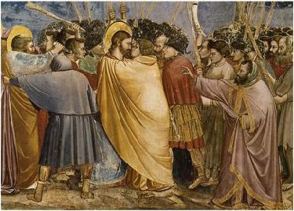

John tells us that Judas left the group during the dinner. In greeting Jesus first, Judas again abrogates the relationship required by protocol. It is noteworthy that at least one of Jesus’ followers was armed - a violation of Roman law and indication that an armed revolution was within their expectations of this Messiah. This also explains Judas’ betrayal of Jesus in that Judas hopes by revealing that Jesus considers himself the King of the Jews to force Jesus to take miraculous action.

Kiss of Judas by Giotto